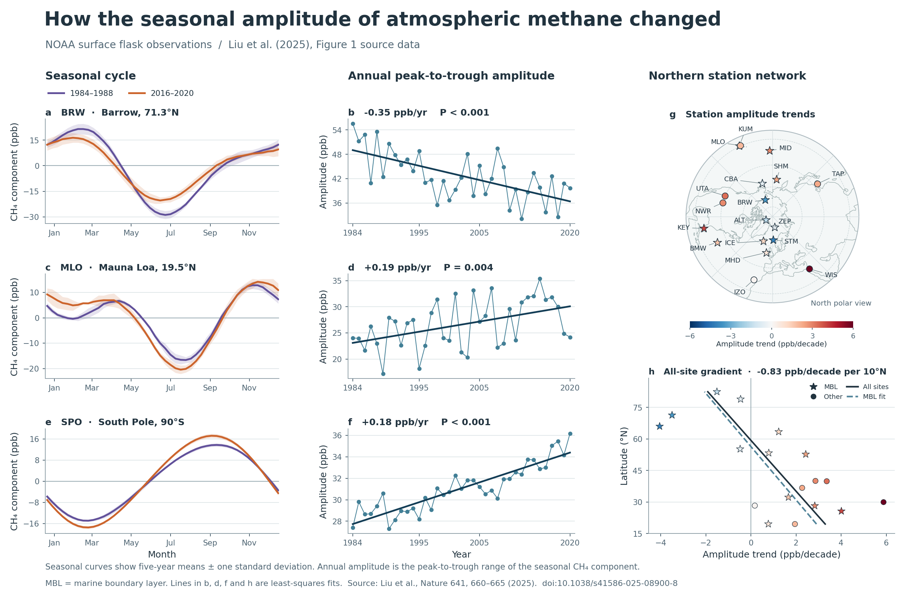
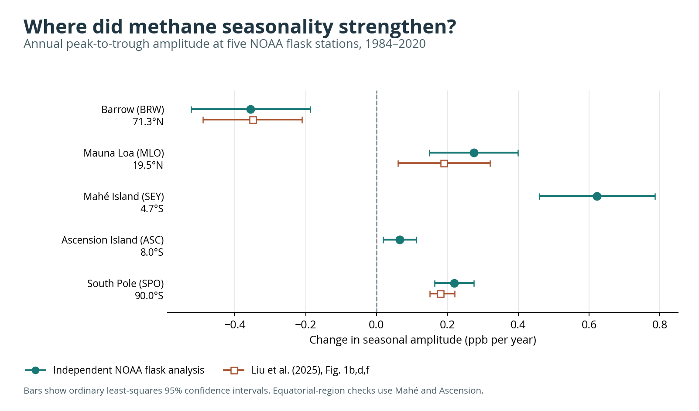
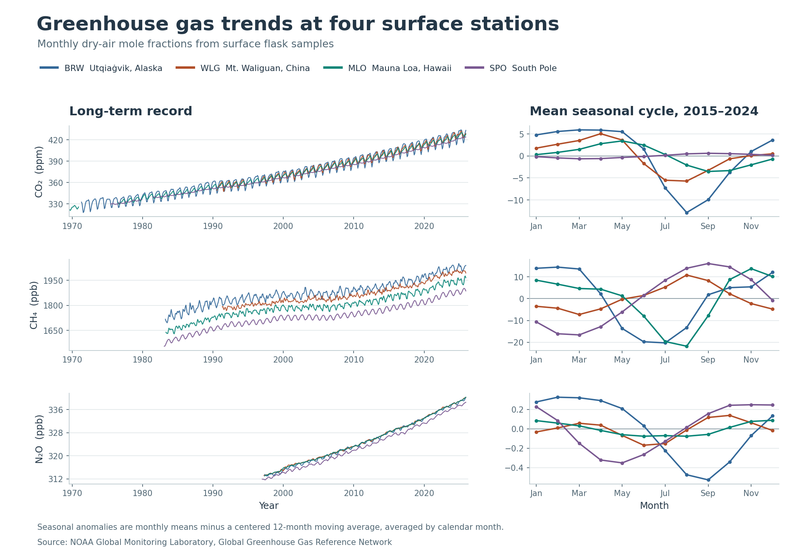
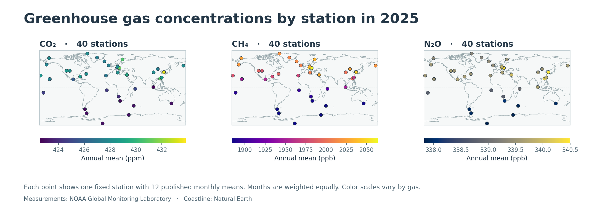

Greenhouse gases at NOAA flask stations
How has methane’s seasonal amplitude changed?
Methane’s annual peak-to-trough range narrowed at Barrow and widened at Mauna Loa and the South Pole during 1984–2020. This redraw of Figure 1 in Liu et al. (2025) uses the authors’ published figure data. Panels a–f compare seasonal cycles and annual amplitudes. Panels g–h examine how the trend varies with latitude.

The fitted slopes are −0.350, +0.195 and +0.185 ppb per year at Barrow, Mauna Loa and the South Pole. The authors used atmospheric transport and chemistry simulations to attribute the northern high-latitude decrease primarily to growing natural emissions and the tropical and subtropical increase primarily to stronger oxidation by OH.
Liu et al., Nature (2025)Original Figure 1 data (XLSX)Seasonal cycles (CSV)Annual amplitudes (CSV)Station trends (CSV)Regressions (CSV)
Independent check from individual flask measurements
We used NOAA’s 17 July 2026 release to estimate the 1984–2020 amplitude trends at five sites. The signs agree with the published trends at the three focal stations. Mahé (4.7° S) and Ascension (8.0° S) also show increasing amplitudes, with substantially different slopes.

We averaged quality-selected measurements into eight-day bins, filled gaps with iterated random forests, and extracted the 180–420-day component using singular spectrum analysis. Trends use site-years with at least 23 of 46 observed bins. The primary embedding window is three years. Updated data and choices for binning, imputation and filtering affect the estimates. Intervals are conditional on the reconstructed seasonal series.
Trends and window sensitivity (CSV)Annual amplitudes and coverage (CSV)Eight-day values (CSV)NOAA methane measurements
Long-term change and the seasonal cycle at four stations

Where are concentrations highest?

Mapped station means and coordinates (CSV)NOAA GML data archive